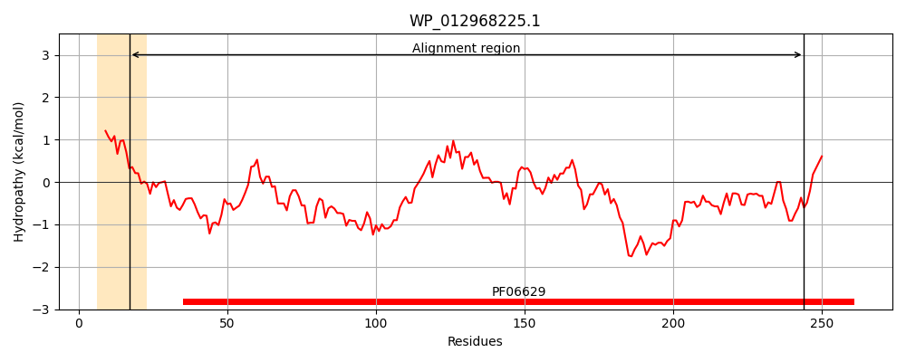
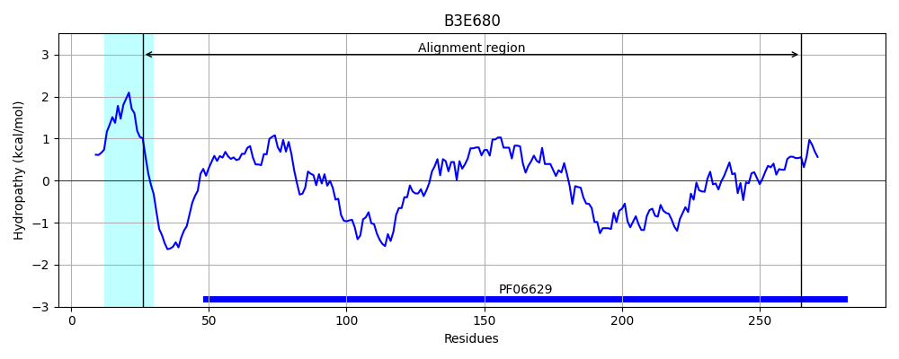
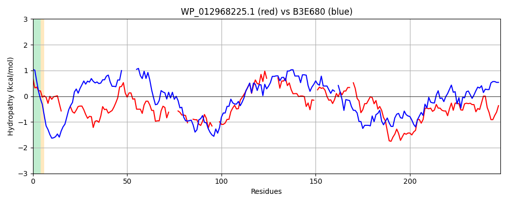

Hit Accession: B3E680
Hit TCID: 1.B.93.1.6
Hit Description: gnl|BL_ORD_ID|1772 gnl|TC-DB|B3E680|1.B.93.1.6 MltA-interacting MipA family protein OS=Geobacter lovleyi (strain ATCC BAA-1151 / DSM 17278 / SZ) GN=Glov_1081 PE=4 SV=1
Mach Len: 248
e:0.000000
Query TMS Count : 1
Hit TMS Count: 1
TMS-Overlap Score: 0.800000
Predicted Substrates:None
BLAST Alignment:
Score: 130 , Bit scores: 54 bits, E-value: 7.8e-09, Alignment length: 248, Percentage identity: 23
Query: 17 AMTSCVQANDDTSSGT----FTIGLGGHYTPRYSGSDKQVWQVVPVLQGRNGAFFIDTQKGVGYDLQNASGWY----FEHTLG--YDLGRADKNAS---WRAGANNLKGMGDIDASLNTALAVGW-----QALSWLSVEGKATLPLTDSQ-GVSYQASLTLLPVQTDHD-TVAFQTAALFGDNRYLNTWYGVDPQQSQRSGYSRYSAPGGFYGIDNSLTWSHQFDAHWGTLLSADYTWLGEHANESPI 244
++ + QA+D G ++GLG P Y GS + +PV+ I + V ++ S ++ F + +G YD GR D + +G + L+G+GDI A++ + Q + + ++ T L S GV Q L + P Q D + + + + +N+Y+ ++G+ P+Q+ RS +S Y A L ++ +W L A SPI
Sbjct: 26 SVPAMTQADDYKEEGKNNWDISLGLGLAAAPVYEGSTHYLAAPIPVVA-------ISWRDTVSLGIEGLSFYHKTGAFRYGVGLTYDPGRKDNGKNIFGMSSGDHRLEGLGDIKAAMGLKAFASYDLYSLQQIPLIVLDASVTKLLGSSNDGVLVQGGLAM-PFQLGQDWRLTPKISTTWANNQYMQDYFGITPEQAARSQFSTYKAKASMKDASIGLNVTYSITKNWFVTGDGRVKILLSDAASSPI 265 | Protein Hydropathy Plots: |
|---|
|  |  |
Pairwise Alignment-Hydropathy Plot:
|
|---|
|  |